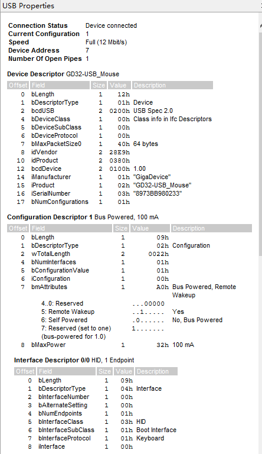
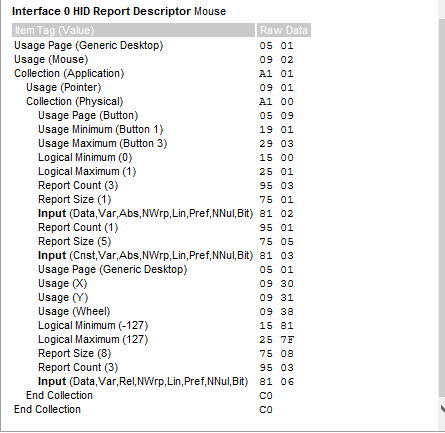

USB探索|3.从USB键盘改造成USB鼠标
1. 实现思路
有了前面实现USB键盘的基础，实现USB鼠标就变得相对非常的简单了。和USB键盘一样，USB鼠标也是HID设备。因此只需要修改HID报告描述符就能成功的把USB键盘改造成一个USB鼠标。
这里直接采用《圈圈带你玩USB》书中的鼠标案例中的HID报告描述符。内容如下：
const uint8_t hid_report_desc[USB_HID_REPORT_DESC_LEN] = {
//每行开始的第一字节为该条目的前缀，前缀的格式为：
//D7~D4：bTag。D3~D2：bType；D1~D0：bSize。以下分别对每个条目注释。
//这是一个全局（bType为1）条目，选择用途页为普通桌面Generic Desktop Page(0x01)
//后面跟一字节数据（bSize为1），后面的字节数就不注释了，
//自己根据bSize来判断。
0x05, 0x01, // USAGE_PAGE (Generic Desktop)
//这是一个局部（bType为2）条目，说明接下来的应用集合用途用于鼠标
0x09, 0x02, // USAGE (Mouse)
//这是一个主条目（bType为0）条目，开集合，后面跟的数据0x01表示
//该集合是一个应用集合。它的性质在前面由用途页和用途定义为
//普通桌面用的鼠标。
0xa1, 0x01, // COLLECTION (Application)
//这是一个局部条目。说明用途为指针集合
0x09, 0x01, // USAGE (Pointer)
//这是一个主条目，开集合，后面跟的数据0x00表示该集合是一个
//物理集合，用途由前面的局部条目定义为指针集合。
0xa1, 0x00, // COLLECTION (Physical)
//这是一个全局条目，选择用途页为按键（Button Page(0x09)）
0x05, 0x09, // USAGE_PAGE (Button)
//这是一个局部条目，说明用途的最小值为1。实际上是鼠标左键。
0x19, 0x01, // USAGE_MINIMUM (Button 1)
//这是一个局部条目，说明用途的最大值为3。实际上是鼠标中键。
0x29, 0x03, // USAGE_MAXIMUM (Button 3)
//这是一个全局条目，说明返回的数据的逻辑值（就是我们返回的数据域的值啦）
//最小为0。因为我们这里用Bit来表示一个数据域，因此最小为0，最大为1。
0x15, 0x00, // LOGICAL_MINIMUM (0)
//这是一个全局条目，说明逻辑值最大为1。
0x25, 0x01, // LOGICAL_MAXIMUM (1)
//这是一个全局条目，说明数据域的数量为三个。
0x95, 0x03, // REPORT_COUNT (3)
//这是一个全局条目，说明每个数据域的长度为1个bit。
0x75, 0x01, // REPORT_SIZE (1)
//这是一个主条目，说明有3个长度为1bit的数据域（数量和长度
//由前面的两个全局条目所定义）用来做为输入，
//属性为：Data,Var,Abs。Data表示这些数据可以变动，Var表示
//这些数据域是独立的，每个域表示一个意思。Abs表示绝对值。
//这样定义的结果就是，第一个数据域bit0表示按键1（左键）是否按下，
//第二个数据域bit1表示按键2（右键）是否按下，第三个数据域bit2表示
//按键3（中键）是否按下。
0x81, 0x02, // INPUT (Data,Var,Abs)
//这是一个全局条目，说明数据域数量为1个
0x95, 0x01, // REPORT_COUNT (1)
//这是一个全局条目，说明每个数据域的长度为5bit。
0x75, 0x05, // REPORT_SIZE (5)
//这是一个主条目，输入用，由前面两个全局条目可知，长度为5bit，
//数量为1个。它的属性为常量（即返回的数据一直是0）。
//这个只是为了凑齐一个字节（前面用了3个bit）而填充的一些数据
//而已，所以它是没有实际用途的。
0x81, 0x03, // INPUT (Cnst,Var,Abs)
//这是一个全局条目，选择用途页为普通桌面Generic Desktop Page(0x01)
0x05, 0x01, // USAGE_PAGE (Generic Desktop)
//这是一个局部条目，说明用途为X轴
0x09, 0x30, // USAGE (X)
//这是一个局部条目，说明用途为Y轴
0x09, 0x31, // USAGE (Y)
//这是一个局部条目，说明用途为滚轮
0x09, 0x38, // USAGE (Wheel)
//下面两个为全局条目，说明返回的逻辑最小和最大值。
//因为鼠标指针移动时，通常是用相对值来表示的，
//相对值的意思就是，当指针移动时，只发送移动量。
//往右移动时，X值为正；往下移动时，Y值为正。
//对于滚轮，当滚轮往上滚时，值为正。
0x15, 0x81, // LOGICAL_MINIMUM (-127)
0x25, 0x7f, // LOGICAL_MAXIMUM (127)
//这是一个全局条目，说明数据域的长度为8bit。
0x75, 0x08, // REPORT_SIZE (8)
//这是一个全局条目，说明数据域的个数为3个。
0x95, 0x03, // REPORT_COUNT (3)
//这是一个主条目。它说明这三个8bit的数据域是输入用的，
//属性为：Data,Var,Rel。Data说明数据是可以变的，Var说明
//这些数据域是独立的，即第一个8bit表示X轴，第二个8bit表示
//Y轴，第三个8bit表示滚轮。Rel表示这些值是相对值。
0x81, 0x06, // INPUT (Data,Var,Rel)
//下面这两个主条目用来关闭前面的集合用。
//我们开了两个集合，所以要关两次。bSize为0，所以后面没数据。
0xc0, // END_COLLECTION
0xc0 // END_COLLECTION
};
然后就是USB键盘案例中的报告内容返回修改下就OK了。代码如下所示：
static void hid_key_data_send(usb_dev *udev)
{
standard_hid_handler *hid = (standard_hid_handler *)udev->class_data[0];
if(hid->prev_transfer_complete) {
switch(key_state()) {
case CHAR_B:
hid->data[2] = -5;// 鼠标上移5个单位
break;
default:
break;
}
if(0U != hid->data[2]) {
hid_report_send(udev, hid->data, 4);
}
}
}
这样按下板子上的wakeup按键鼠标指针就会向上移动5个单位的大小。


- 原文作者：Binean
- 原文链接：https://bineanju.gitee.io/blog/post/20220220GD32USB04/
- 版权声明：本作品采用知识共享署名-非商业性使用-禁止演绎 4.0 国际许可协议进行许可，非商业转载请注明出处（作者，原文链接），商业转载请联系作者获得授权。